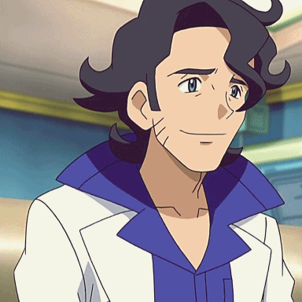

 Growing up, I'd often see my favorite anime characters listed with their bloodtype, but I didn't quite understand why it mattered. I was very young at the time! But I then I was told about Ketsueki-gata, or 血液型性格分類, which is a Japanese belief that blood type can personality traits. Suddenly it made sense to me why people would be so interested in the canonical bloodtypes of characters! Professor Sycamore, unfortunately, has no canonically confirmed blood type, but that won't stop us from speculating!
For those who might not be familiar, ketsueki-gata in Japan is seen similarly as to one might think about zodiac signs in Western culture. There are four main blood types, and each have distinct personality profiles associated with them.
Type AThe Perfectionist
Type BThe Individualist
Type ABThe Humanist
Type OThe Leader
Analzying Professor Sycamore's character throughout Pokémon XY, which of these feels most fitting? His gentle nature, his focus on relationships and experiences, his role as a mentor and facilitator... while all of the blood types can be fitting for him in one way or another, I personally think that AB is the most fitting. This is because AB combines aspects of both A and B, while also embodying his own unique aspects. Let me explain...
Of course, Professor Sycamore is very A-coded... his sensitivity to others, the consideration, his loyalty, his methodical approach to research even when he's passionate about it. The way he avoids conflict with Lysandre is very A-type for conflict avoidance. But then you see his B-coded qualities, his creativity, his genuine enthusiasm, there's definitely a B-type optimism and enthusiasm in everything he does. Professor Sycamore's philosophy surrounding 'treasure these moments' feels very B-coded in that there's a focus on freedom and authentic experience over rigid structure.
That's why I think AB is perfect for him! He embodies both sides. The rational AB type allows him to balance B-type spontaneity with A-type consideration. Someone might think that 'indecisive and emotionally distant' does not fit Professor Sycamore given his exuberance, but I think there's enough evidence in game to support that Professor Sycamore can be both of those things. His struggle to confront his former student directly, a thing that he himself regrets, is a kind of emotional distancing.. an avoidance to difficult conversations, and his letter in Couriway implies a person who has found himself wondering about himself for some time.
Professor Sycamore approaches research scientifically while also embracing its mysterious elements with gusto. He truly wants to bring people together! "Seeks balance and fairness" fits too, I think, as someone who is positioned between tradition and innovation, past and future. But that's just what I think!